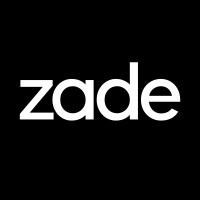

Denys Surmyak
UX/UI Designer
Product designer for web and mobile. I think in terms of the product, not just screens — the problem, the logic behind it, user scenarios and edge cases — and turn complex requirements into clear structure and UI, through to developer handoff.
Experience

UX/UI Designer Design agency building client products and MVPs
Owned design tasks on client products from the problem to developer handoff, across web and mobile.
- Turned complex product requirements into clear logic, information architecture and UI.
- Contributed to products shipped as MVPs to validate demand and support fundraising.
Spectrium LLPJan 2026 – Jul 2026 · 7 months
UX/UI Designer UK-based IT company delivering web products — design, frontend and backend
Designed a CRM and the company’s corporate website.
Projects
Zade Space
Finance PlatformWeb & mobile
Shaped the product logic and information architecture — how data is structured, connected and explained to the user. Designed the main dashboard and data views, used research to ground the structure, and built interactive prototypes to check key flows.
Care AppMobile
Designed key mobile flows and screens from a clear client brief, working within the existing UI kit to keep the product consistent. Prepared detailed specs so developers could build without guesswork.
Spectrium LLP
CRMWeb
Designed the core flows and screens, plus a set of reusable components so new sections could be added consistently.
Corporate websiteWeb
Planned the page structure and content hierarchy, then took it from wireframes to the final UI.
Personal concepts
FlowOps · NOMAD OS · CENTRA · Shift · OAX Systems
SaaS, dashboard, AI and mobile concepts — full cycle on each, from research to prototype.